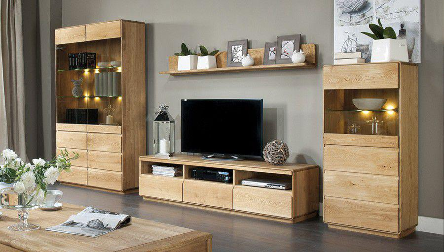

Welcome to Belsőépítészet Magyarországon bútor
Nappali bútorok
2020.11.19 09:24
A november 15.-e utáni megrendeléseket már nem minden esetben tudjuk ebben az évben kiszállítani.
Az ez után leadott rendeléseknél előzetes telefonos egyeztetés szükséges. Bútor webáruház - bútorok megfizethető áron. Étkezőgarnitúra, franciaágy országos kiszállítással Beállítások Kosár Pénztár Bejelentkezés
Bevásárlókosár
0 termékMy Cart -
0 termék My Cart: (0) Információ Hasznos inormációk Hogyan működik? Gyakori Kérdések OutletPontok Garancia Szállítás Áruhitel KapcsolatKérdezzen, érdeklődjön telefonon szakértőnktől! H-P 7:30-15:30
Ügyfélszolgálat:
+36 70 410 3456
vagy +36 70 600 6543
E-mail:
info@outletbutor.hu
Garanciás E-mail:
garancia@outletbutor.hu Felhívjuk kedves vásárlóink figyelmét hogy a fent feltüntetett időponton kívül nem áll módunkban fogadni felkeresésüket. Amennyiben egyik felületen nem ér el minket úgy kérjük próbálkozzon másik elérhetőségünk valamelyikével. A megnövekedett felkereséseket, folyamatosan fogadjuk, ennek ellenére előfordulhat hogy csak hosszas próbálkozás, várakozás után tud beszélni ügyintézőink valamelyikével. Miért mi?
Termékeinket házhoz szállítjuk
Előre egyeztetett
időpontban érkezünk
Saját munkatársaink szállítanak,
és ha kell öszeszerelnek
Választható fizetési módok
Garanciát vállalunk termékeinkre
Szakértő munkatársaink várják
a telefon másik végén Vásárlói vélemények Blog Ügyfélszolgálat Gyakori Kérdések Menü Home Újdonságok Akciós bútorok Ajándékkártya 50% Leértékelés! Akciós Lapra szerelt Nappali bútor leértékelés Konyha, étkező Nappali bútorok Kanapé Szekrénysor U alakú ülőgarnitúra Ülőgarnitúra TV szekrény Sarokülő Fotel Állítható fotelek Kétszemélyes fotelek Masszázsfotelek Hintaszékek Elemes nappali bútorok Dohányzóasztal Nappali Összeállítások Bőr ülőgarnitúrák Variálható sarok ülőgarnitúrák Babzsákok, Puffok Polcok Kiegészítők Konzol asztalok Komodok Étkező Étkezőgarnitúra Étkezőasztal Étkezőszék Sarok étkező Tálaló Ebédlő kiegészítők Konyhabútor Konyhabútor blokkok Elemes konyhabútorok Konyhai Padok Berta étkező Hálószoba bútor Ágykeret Matrac Ágyrácsok Heverők / Egyszemélyes Ágyak Franciaágy Komód Éjjeliszekrények Ágyneműtartó Hálószoba Elemes bútorok Gardróbszekrény Fésülködőasztalok Hálószoba kiegészítők Hálószoba Összeállítások Ágy Ágykeret Gyerekbútor Gyerekágy Gyerekbútor kiegészítők Gyerekágy Elemes gyerekbútorok Emeletes Ágyak Puffok és ülőzsákok Székek gyerekeknek Szekrénysor Szekrények Irodabútor Irodai szék Irodai összállítások (Irodabútor programok) Íróasztal és számítógépasztal Irodai kiegészítők Polcok és könyves szekrények Kiegészítő bútorok Előszobafal Cipősszekrény Fogas Előszoba Kiegészítők Előszoba Összeállítások Kerti bútor Kerti Bútor Szett Kerti Szék Kerti Asztal Napozóágy Tárolók és Szekrények Szerszámos Ház Kerti Játékok Komposztálók Virágládák Talicskák Kerti kiegészítők Függőfotel Hintaszék Függőágy Fürdőszoba Fürdőszoba kiegészítők Állványok Szekrénykosarak Vasalódeszkák Elemes fürdőszoba bútorok Szőnyegek, Kiegészítők Szőnyegek Képek, Fotótapéták LED világítás Lámpák Kategóriák Akciós bútorok 50% Leértékelés Ajándékkártya Franciaágyak Étkezőgarnitúra Komplett Szobabútorok Provance Infinity Dunaj Lynatet Leonardo Laveli Chamion Spice Norty Valeria Gatik Montana Pello Nevada Oslo Grand Kora Tedy Panama Royal Paris Monte Tiffy Liona Davis Armond Noko-Singa Diaz Topty Piere Ego Angel Emio Lotty Winie Svend Teyo Lobete Marsie Orestes Artek Stragy Nappali bútor Kanapé Két személyes Két és fél személyes Három személyes Ágyazható
Sarokülő Rugós Szivacsos Rugós & Szivacsos Ágyazható
Fotel Állítható fotelek Kétszemélyes fotelek Masszázsfotelek Hintaszék
Ülőgarnitúra 3 - 1 - 1 3 - 2 - 1
Szekrénysor < 200 cm 200-250 cm 250-300 cm 300-350 cm > 350 cm
Nappali Összeállítások U alakú ülőgarnitúra Variálható sarok ülőgarnitúrák Elemes nappali bútorok Bőr ülőgarnitúrák Polcok TV szekrény Dohányzóasztal Komód Babzsákok, Puffok Étkezők & Konyha Étkezőgarnitúra Négy személyes Hat személyes Nyolc személyes Bővíthető
Étkezőszék Fa ülőfelülettel Szövet ülőfelülettel Textilbőr ülőfelülettel
Étkezőasztal Négy személyes Hat személyes Bővíthető
Elemes konyhabútorok Konyhabútor blokkok Sarok étkező Tálaló Ebédlő kiegészítők
Berta étkező Hálószoba bútorok Gardróbszekrény Nyílóajtós Tolóajtós Magasítható
Franciaágy 140x200 160x200 180x200 200x200
Hálószoba Összeállítások Heverők / Egyszemélyes Ágyak Hálószoba Elemes bútorok Fésülködőasztalok Ágyneműtartó
Matrac Memóriahabos Rugós Szivacsos
Ágykeret 90x200 140x200 160x200 180x200 200x200
Ágyrácsok Éjjeliszekrények Szekrények Komód Fürdőszoba bútorok Elemes fürdőszoba bútorok
Fürdőszoba kiegészítők Állványok Szekrénykosarak Vasalódeszka
Irodabútor Irodai szék Íróasztal és számítógépasztal Irodai kiegészítők Polcok és könyves szekrények
Irodai összállítások (Irodabútor programok) Előszoba Bútorok Előszobafal Cipősszekrény Fogas Előszoba Összeállítások Előszoba Kiegészítők Gyerekbútorok Elemes gyerekbútorok Gyerekágy Gyerekbútor kiegészítők Székek gyerekeknek Puffok és ülőzsákok Emeletes Ágyak Kerti bútorok Kerti Bútor Szett Kerti Asztal Kerti Szék Napozóágy Tárolók és Szekrények Függőágy Függőfotel Hintaszék Talicskák Virágládák Komposztálók Kerti Játékok Szerszámos Ház Kerti kiegészítők Szőnyegek és Kiegészítők Szűkítés: Kategória Kanapé (176) Szekrénysor (92) U alakú ülőgarnitúra (68) Ülőgarnitúra (43) TV szekrény (61) Sarokülő (223) Fotel (191) Elemes nappali bútorok (19) Dohányzóasztal (147) Nappali Összeállítások (49) Bőr ülőgarnitúrák (3) Variálható sarok ülőgarnitúrák (69) Babzsákok, Puffok (119) Polcok (268) Kiegészítők (2) Konzol asztalok (7) Komodok (1)
Nappali bútorok
Nappali bútorok széles választéka: kanapé, szekrénysor, U és L alaku ülőgarnitúrák, kanapék, 321-es és 311-es összeálítások. Sarkok, Tv szekrények, fotelek (Legyen szó akár hintaszékről vagy masszázsfotelról) valódi bőr ülőgarnitúrák, polcok, tárolók, szekrénye, szekrénysorok, nappali összeállítások. Válogass ma, rendezd be a nappalit most!
Kanapé
Szekrénysor
U alakú ülőgarnitúra
Ülőgarnitúra
TV szekrény
Sarokülő
Fotel
Elemes nappali bútorok
Dohányzóasztal
Nappali Összeállítások
Bőr ülőgarnitúrák
Variálható sarok ülőgarnitúrák
Babzsákok, Puffok
Polcok
Kiegészítők
Konzol asztalok
Komodok
Rendezés Pozíció Név Ár Szekrény magasság Mutat 12 42 60 90 Mind Komód, D4S, fehér, grandson tölgy/fehér magasfényű, CITY 97 700 Ft Kosárba Rendezés Pozíció Név Ár Szekrény magasság Mutat 12 42 60 90 Mind Média Facebook Instagram Pinterest Youtube Interaktív Segítség Információ Adatvédelmi nyilatkozat Garancia Vásárlói vélemények Impresszum Karrier Fizetés és Szállítás Általános szerződési feltételek Megrendelés menete Szállítási feltételek Vásárlási feltételek Elállási nyilatkozat Cofidis áruhitel Cofidis áruhitel hirdetmény Kapcsolat icon Email : info@outletbutor.hu icon Email : garancia@outletbutor.hu icon Ügyfélszolgálat : +36 70 600 6543vagy +36 70 410 3456 Gyakori Keresések| Kategóriánként FRANCIAÁGY: Rugós franciaágy | Szivacsos franciaágy | 160x200 franciaágy | 180x200 franciaágy | Összes franciaágy | Franciaágy KANAPÉK: Rugós kanapé | Szivacsos kanapé | Ágyazható kanapé | Textilbőr kanapé | Zsenília kanapé | 200cm Alatti kanapé | 200-240cm közötti kanapé | 240 fölötti kanapé | Összes kanapé ÉTKEZŐK: 4 személyes étkező garnitúra | 6 személyes étkező garnitúra | 8 személyes étkező garnitúra | Bővíthető asztallal étkező garnitúra | Étkezőszék | Étkezőasztal | Étkező garnitúra | Összes étkező garnitúra SZEKRÉNYEK: Szekrénysor | Gardróbszekrény | Magasítható gardróbszekrény | Tolóajtós gardróbszekrény | 200-250cm Széles gardróbszekrény | 250-300cm Széles gardróbszekrény | 350cm Széleségnél nagyobb gardróbszekrény | Összes gardróbszekrény KIEGÉSZÍTŐ BÚTOR: Előszobafal | Cipősszekrény | Komód | Irodaszékek | Íróasztalok | Dohányzóasztalok | Éjjeliszekrények | Fotelek | Irodabútorok | TV Szekrény Brender Ruhák | Cipők | Fehérnemük | Táskák | Kiegészítők | Kozmetika | Női ruhadarabok | Új ruhadarabok | Összes Blog
Megfizethető bútor, megfizethetőbútor Webáruház - Bútorok megfizethető áron Itt!
Minden jog fenntartva! © Outletbutor.hu
